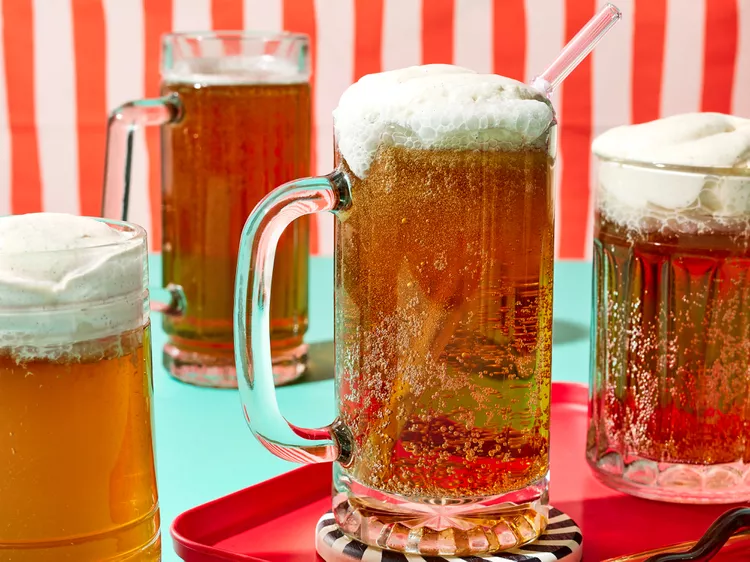

Butterbeer

Description
Indulge in the enchanting taste of Butterbeer with our authentic recipe! This iconic beverage from the wizarding world combines creamy butterscotch flavors with a hint of spice, topped with a frothy layer of whipped cream. Perfect for Harry Potter fans or anyone craving a magical treat!
Ingredients
- 1/2 cup heavy cream
- 1/4 teaspoon ground cinnamon or pumpkin pie spice
- 1 pinch salt
- 2 tablespoons butterscotch topping
- 1 to 2 teaspoons lemon juice
- 6 (12 ounce) bottles cream soda
Directions
- Freeze 6 mugs or pint glasses until icy, at least 15 minutes. Meanwhile, for whipped topping, beat together cream, cinnamon, and salt in a medium bowl with an electric mixer at medium speed until stiff peaks form. Add butterscotch topping and lemon juice; beat again until soft peaks form.
- For each butterbeer, pour 1 can cream soda into a mug; top with about 2 tablespoons whipped topping. Serve immediately.